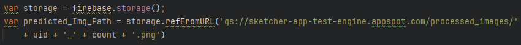

The basic project line was as follows: Decide it would be cool to have a website that would
let you scroll around a Google Maps satellite image to wherever you wanted, click a button,
and have a trained ML algorithm perform semantic segmentation on all the buildings.
Leaving the data wrangling, conversion, processing, augmentation, and formatting to another
section, the website pipeline is as follows:
This section pertains to the Cloud App portion of the website.
First Stage: Create the static satellite image & send to the storage bucket:
User is presented with a static pre-API-call Google Maps JavaScript window.
User activates the Google Maps JavaScript window, and is
assigned a unique (based on browser identity), impermanent Firebase userID.
Firebase authenticates Google API key, activates window, initializes a count variable to
zero.
User scrolls around, zooms in, out, decides they've found a spot.
During the above step, the map object is constantly listening and resstablishing
the center, zoom, and bounds of the JavaScript map object.
User presses on the "Run Building Identification on current Map View!" button.
The counter is incremented, bounds are split into north, south, east, and west corners,
ML serving button is hidden.
Using the earlier established center and zoom values, create a string to be used in the
next asynchronous function.
Using the impermanent userID from firebase, establish the firebase.storage() location
that the static image is going to be sent to.
Fetch the Static Map image from Google Static Maps API, once received, send to the
'satellite_screenshots' folder within the Google Cloud Storage bucket,
appending the userID & count variables (as described in the preceeding step).
Meanwhile, the above steps are wrapped in an asynchronous function, which performs the
following process:
Begin an asynchronous function to fetch and store the static image.
Simultaneously, begin the first asyncCharacterPrint function, which provides
user-feedback data to let them know that the static image has been
retrieved, and sent to the ML processing container.
Wait for receipt of two promises, one for the completion of the static image pull,
and the second for the completion of the asyncCharacterPrint.
Once both promises are received, begin the second asyncCharacterPrint call,
indicating that the image has been received and MP processing has begun.
This section pertains to the Cloud Run portion of the website.
Second Stage: Run the ML on the image:
First we have to let the Cloud Run instance know that there's a reason for it to spin
up, specifically, that a file has been selected by the User, and that it should pull
that image and identify as many buildings as it can on it.
This is achieved by having setup a pubsub topic subscrition to monitor the
satellite_screenshots folder for either of two status updates:
OBJECT_FINALIZE or OBJECT_METADATA_UPDATE.
When either of those status updates occur, a Push notification is sent to
the subscriber, which in this case is the service account associated with the cloud-run
instance containing the Dockerized Detectron2 model, with post-transfer learning weights
for building identification.
The cloud-run instance has an API setup to listen for a POST request, which is expecting
a formatted JSON file which includes data relating to the satellite image.
Using Flask, we start off by creating an envelope object formatting the data contained
in the POST call and verify the contents of the envelope.
Next the container extracts the bucket_path and file_path locations from the envelope,
establishes the storage.Client() object, the bucket object, and the blob object.
Next we link the file_name to the blob.name, and format it to allow for successfully
using it again later. We then create two temporary files using mkstemp(), which
creates a tuple in the form (int, path). We ignore the int portion.
Now we download the image into the first temporary file, open it, and convert it into a
NumPy formatted array.
Now we finally run the image through the pre-trained, specialized Detectron2
algorithm to get a collection of predictions (in the form of another NumPy array).
Next we use Detectron2 functions to create a Visualizer object, and scale the image
down to save on the user-download needs (improves interaction speed).
Then we draw the actual predictions (which are an array of instances, since this is
semantic segmentation) and crucially, do so via a CPU (but we could use a GPU
instead by redeploying this image on a Google Cloud Google Kubernetes Engine
Enterprise Anthos Cloud Run. This would increase costs by a factor of over 10).
Now we grab the formatted image from that the cpu-drawn output.
Having created our prediction file name, we append .png to the second temporary file
from earlier. We take out predicted_img object, and convert it into an Image (since
right now it's still an array). We then save the Image into our second tempoary
file, and
identify it as png format.
Finally, we create a pointer to a location in our bucket expecting a new blob
object,
formatted using the prediction_name established earlier. Then we just upload our
second
temporary file (now an image file) into that identified location.
This section pertains to the Cloud App portion of the website again.
Third Stage: Display the processed image on the dynamic Google Maps window:
Immediately after the ML processing button as been pressed, the website begins
attempting to load the processed image. It does this every .5 seconds It performs
repeated getDownloadURL() requests, using the predetermined naming convention.
This get request uses the format we've just established in the Cloud Run file, but
at the start of the calls, this file doesn't exist yet. These have to be equal:

Once there is an affirmative response of this URL existing where we're looking (which
means the image processing is completed and the processed image has been uploaded
successfully into the Google Cloud Bucket) we:
Create a Ground Overlay object out of the predicted image, and place it on the
dynamic JavaScript Maps image, using the earlier defined bounds information saved
when pressing the Run Building Identification on Current Map View button.
Present some user-facing data, and re-enable the button.
.PNG)
%20firebase%20reset,%20signin,%20count.PNG)